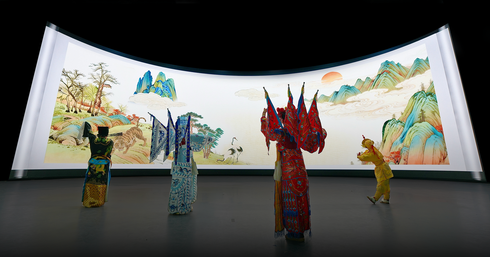
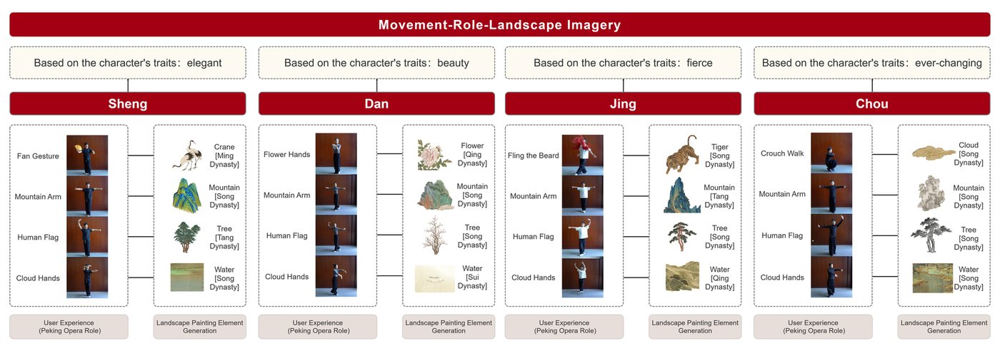
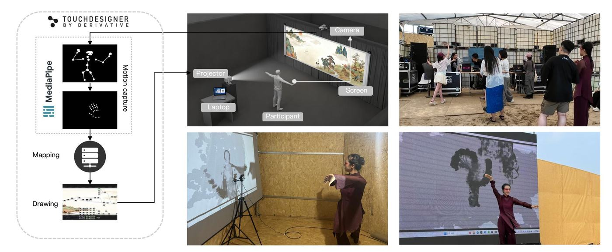
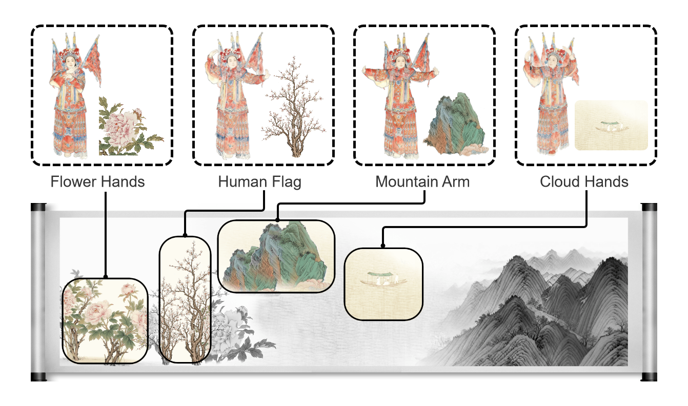
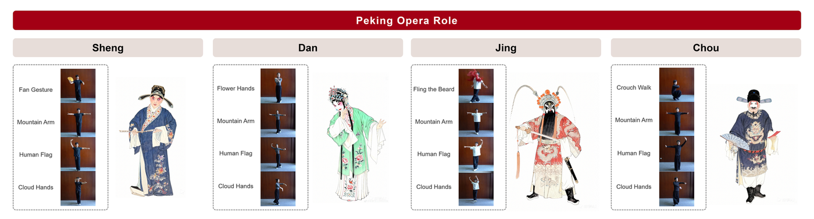
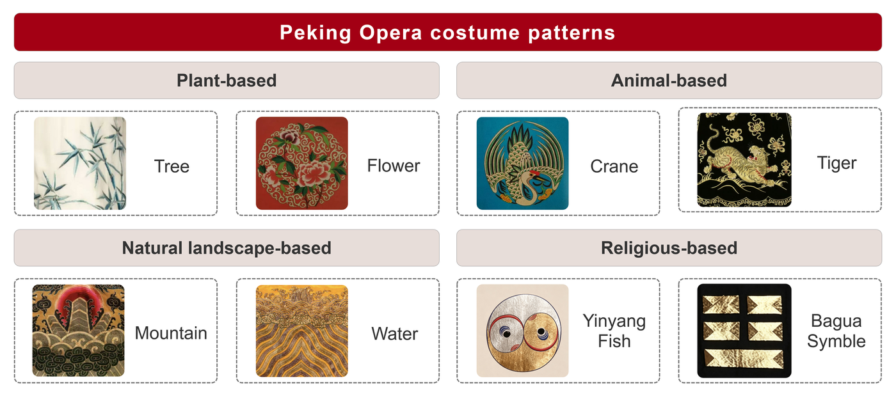
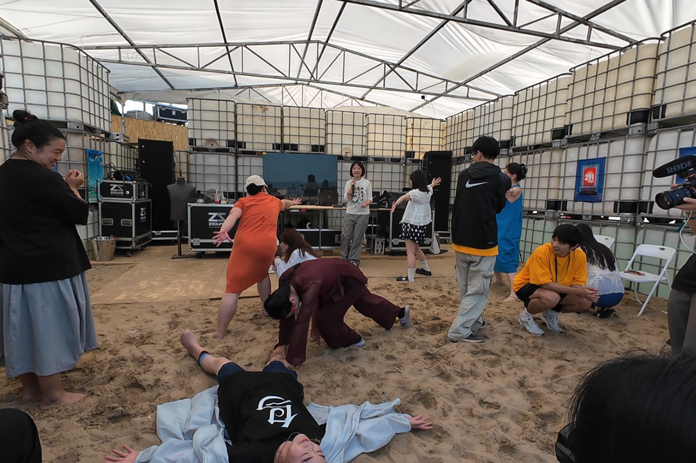
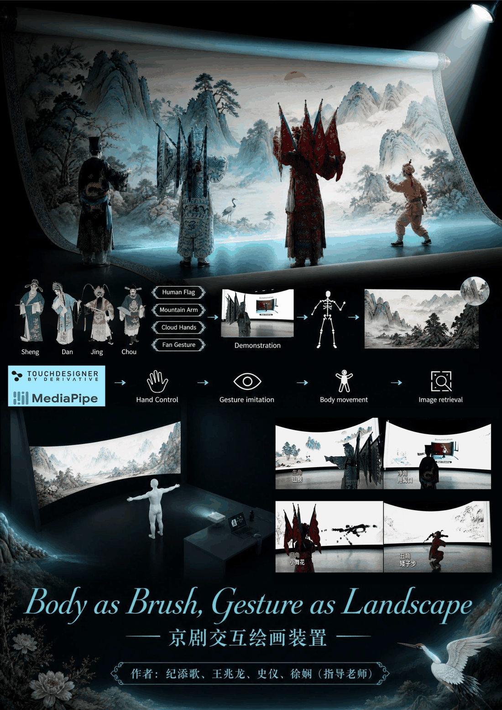
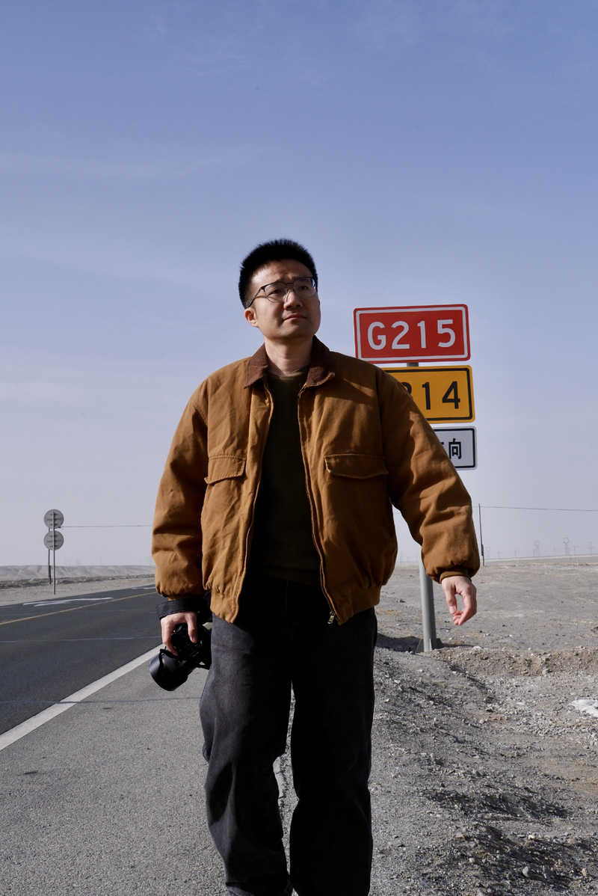
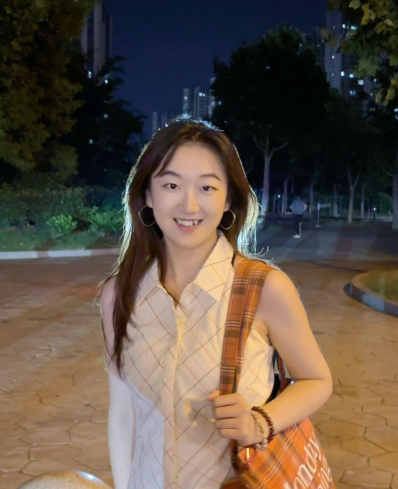

选择行当
观众从生、旦、净、丑四类京剧角色中选择一个入口，进入对应的动作与视觉系统。

本项目以京剧四大行当“生、旦、净、丑”的经典身段为输入，以中国山水画中的山、水、云、树、鹤等视觉意象为输出，建立“动作-角色-山水意象”的跨媒介映射逻辑。
Current Project
京剧和中国山水画都依赖高度凝练的符号系统。它们不直接复制现实，而是在身段、笔墨、留白与意象之间表达精神状态。项目试图把这种难以被初学者直接理解的审美经验转化为可参与、可反馈、可生成的互动过程。
在体验中，观众不再只是观看传统艺术，而是通过模仗京剧身段触发视觉生成。身体成为画笔，动作成为山水，传统美学被转化为一种当代的、可感知的文化交互。

Interactive Experience
体验路径应尽量清晰，让第一次接触京剧的观众也能理解：选择角色、学习动作、触发意象、共同生成画面。
观众从生、旦、净、丑四类京剧角色中选择一个入口，进入对应的动作与视觉系统。
系统引导观众完成云手、顺风旗、山膀等代表性动作，降低专业表演门槛。
MediaPipe 骨骼识别与 TouchDesigner 实时生成系统将动作转译为山、水、云、树、鹤等图像元素。
不同观众与动作组合逐渐生成一幅独特山水，使传统艺术从观看对象转化为参与过程。

System

摄像头捕捉观众身体动作，骨骼追踪系统提取姿态特征。
基于京剧专家访谈与动作语义分析，建立“动作-角色-山水意象”映射。
在 XR 空间中实时生成水墨视觉元素，让观众看到动作的文化转译结果。
Research Framework
关注艺术如何超越具体形似，表达主体精神、情绪与意境。
将空白视为主动生成的诗性空间，而非画面缺失。
通过身体参与降低传统符号系统的理解门槛，使观众从被动观看转为主动生成。
未来可结合问卷、访谈与行为数据，研究观众是否真正理解传统美学概念。


Recognition
项目入选阿那亚戏剧节科技单元，并面向超过千名观众进行公开展示与体验反馈收集。

阿那亚现场体验 1 / 6 · 点击图片查看下一张
项目荣获 ChinaVis 2026 数据可视化竞赛“一等奖作品”。ChinaVis，即中国可视化与可视分析大会，是国内可视化与可视分析领域的重要学术与实践交流平台。

一等奖作品展示海报 1 / 2 · 点击图片查看下一张
Team
“每一个路过的人，都可以来玩两下。”
路人工坊，由香港岭南大学徐娴教授领衔，成员共 4 人，均为中央戏剧学院硕士研究生。我们是一支跨界的艺术科技团队，致力于打破“专业技能”与“日常感知”之间的围墙，通过文化转译的形式，探索跨文化跨领域融合的可能性。
在我们的创作中，京剧不是高文化门槛的艺术，绘画不是艺术馆的静物，科技不是冰冷的代码。我们将三者融合为可触摸、可进入、可被文化感知的装置现场-每个“路人”，都可以随时走进来，在交互中完成一次艺术的对话。我们不要求观众懂戏剧，不需要会操作设备，甚至不需要“准备好参与”。只要你路过，作品就在等你。
香港岭南大学助理教授、博士生导师
香港科技大学博士毕业；中央戏剧学院硕士研究生毕业；牛津、剑桥大学访问学者；ACM CHI、ACM CSCW 等主要国际会议副主席。
研究领域：艺术科技、数据可视化、人机交互、人工智能电影等。
香港岭南大学博士在读；中央戏剧学院硕士研究生毕业
研究领域：艺术科技、情感可视化、戏剧教育。

中央戏剧学院硕士

中央戏剧学院硕士
Research Outlook